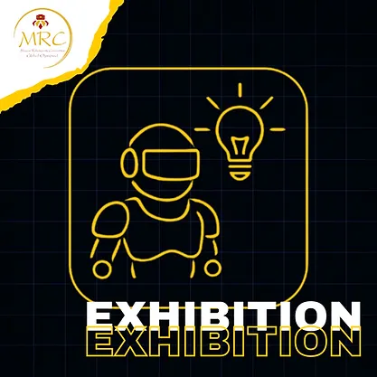

兒童組 (10至12歲 / 國小)
青少年組 / 青年組 (12歲以上至18歲 / 國中及高中)
成人組 (15歲以上至18歲 / 大學 - 個人)
🚨 各年齡組別分別進行比賽。
🔍 研究 - 創造 - 創新 - 創業精神
🎯 目標
展覽項目是一個展示機器人技術、人工智慧、自動化、新科技及相關領域創新與創造力的機會。參賽者與其他隊伍競爭，並有機會在比賽期間向大學教育與研究人員組成的專業評審團展示他們的專案開發與設計。本競賽模擬一個真實的科技專案展覽，參賽者即為「展覽者」。「展覽者」被邀請向代表「投資者」的評審「銷售 - 推廣」他們的產品/想法。
📖 簡介
👥 隊伍
每隊必須由 1 至 3 名成員組成。
🧪 評審方式
本競賽分 4 個階段進行評審：
1. 書面資料
2. 攤位展示
3. 簡報
4. 實體展示
📋 競賽項目要求
所有隊伍/創作者必須在比賽前 15 天內提交 (1) 一部影片（最長 60 秒）和 (2) 隊伍說明文件（最多 2 頁）。影片應寄至以下地址：mrc@he-ro.gr
📄 說明文件（書面資料）應包含以下面向：
• 隊員及其關係（包括指導者）。
• 創作者介紹。
• 專案用途。
• 專案圖片。
• 靈感來源。
• 主要特色與技術規格。
• 預估價格。
🏢 攤位展示
📊 評分表（13歲以上）
評審團將對以下項目進行評分：
1. 簡報技巧 (15 分)
2. 專案功能性 (15 分)
3. 商業計畫 (25 分)
4. 機械面向 (15 分)
5. 創造力與創新 (25 分)
6. 海報 (5 分)
📊 評分表（10-12歲）
評審團將對以下項目進行評分：
1. 簡報技巧 (20 分)
2. 專案功能性 (20 分)
3. 機械面向 (10 分)
4. 研究 (10 分)
5. 創造力與創新 (30 分)
6. 海報 (10 分)
⚠️ 罰則
🕒 簡報時間：
1. 簡報：5 分鐘。
2. 問答：5 分鐘。
📝 簡報內容：
1. 介紹隊員 / 介紹創作者
2. 專案概念。
3. 創新解決方案。
4. 與其他類似專案比較。
5. 商業計畫（適用於 13 歲以上之團體/個人）。
短影片片段、廣告、動畫、照片或其他文件有助於解釋專案。禁止僅以影片全程解說。隊員或創作者應盡可能透過口頭說明的方式提供更多關於其作品的資訊。
📌 重要事項：
🔄 規則變更
這些規則可能由組委會在比賽前隨時更改。您應定期查看這些規則，以確保了解任何變更。
🏆 獲勝者
最佳分數用於決定以下名次：
🥇 第一名 🥈 第二名 🥉 第三名